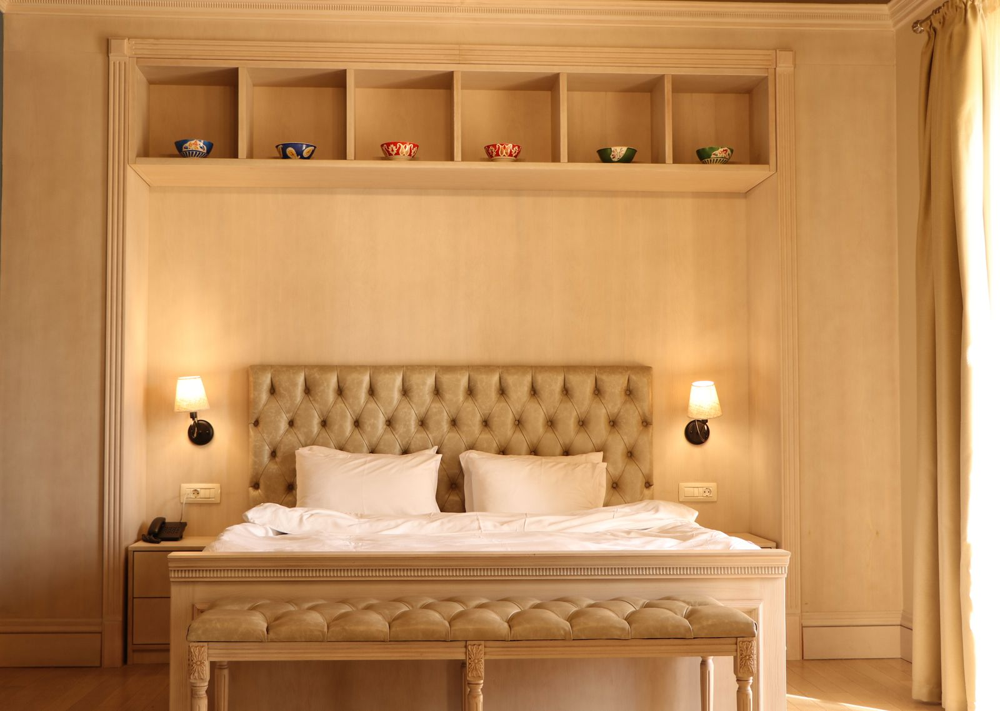
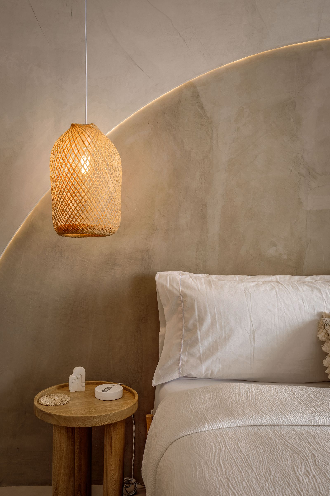
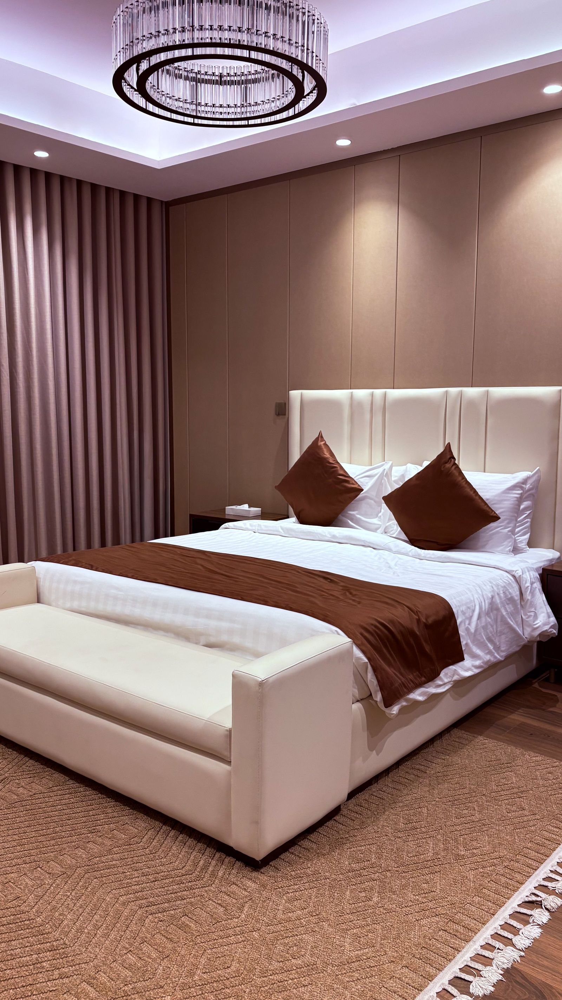
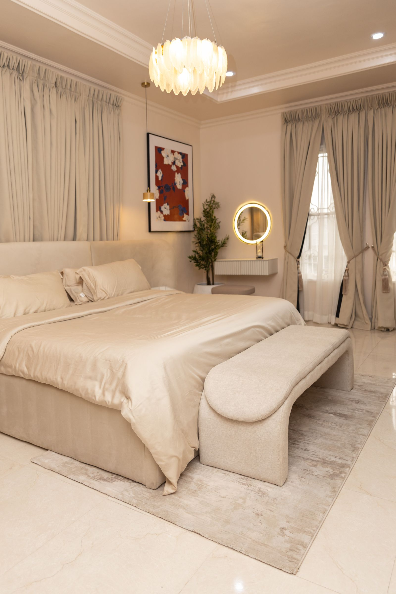
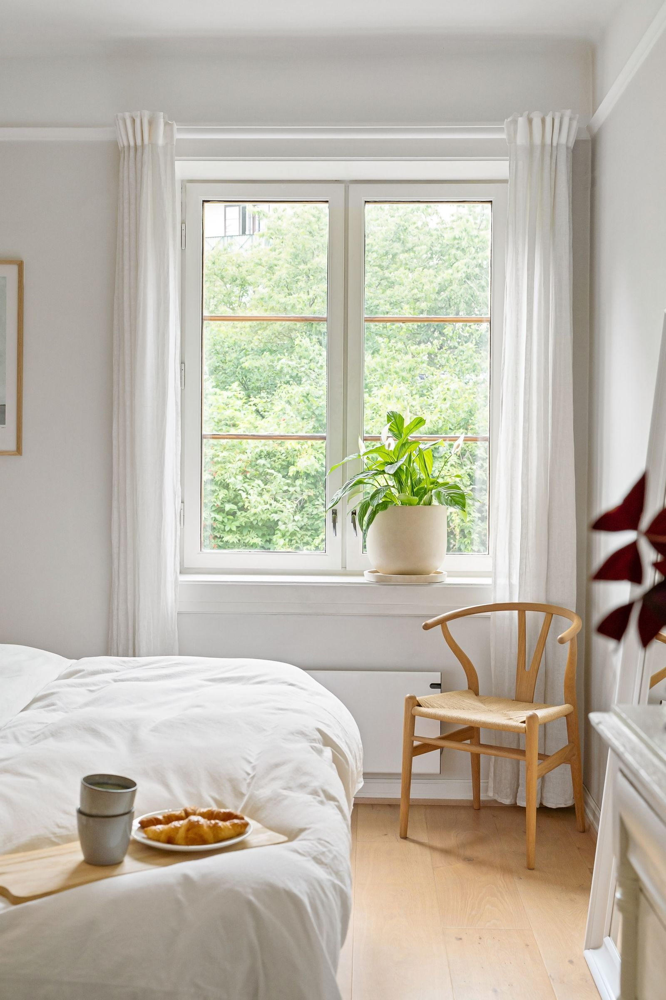
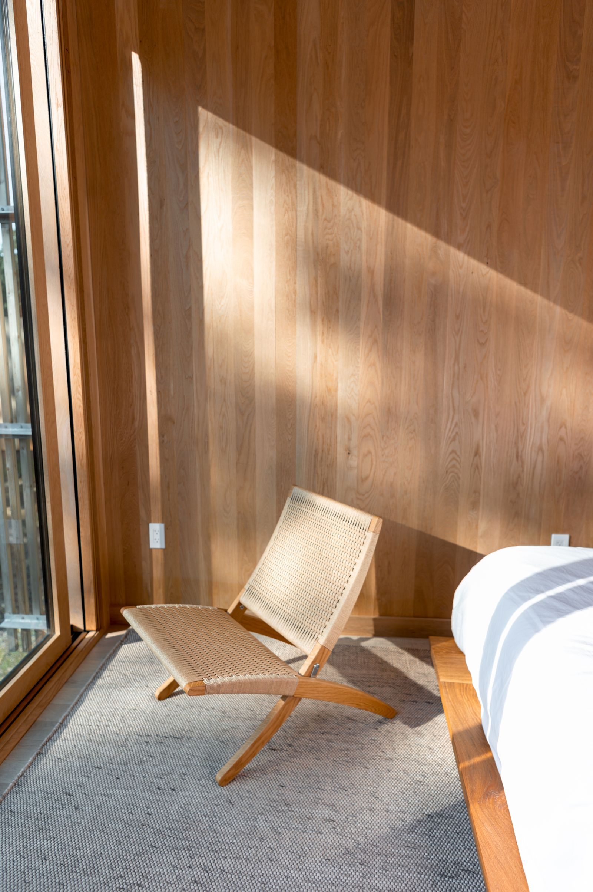
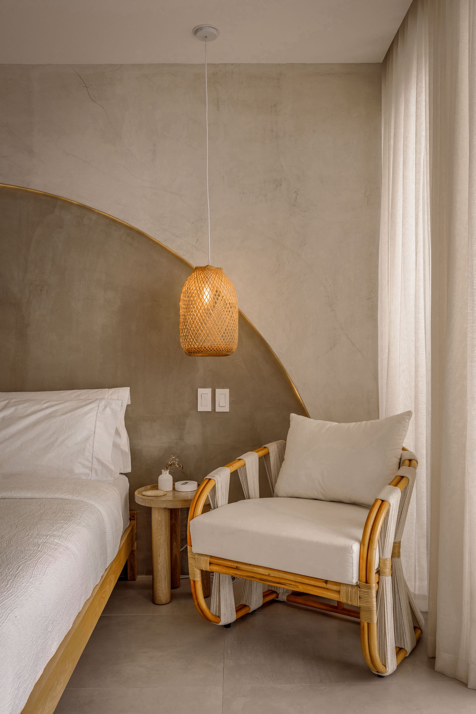
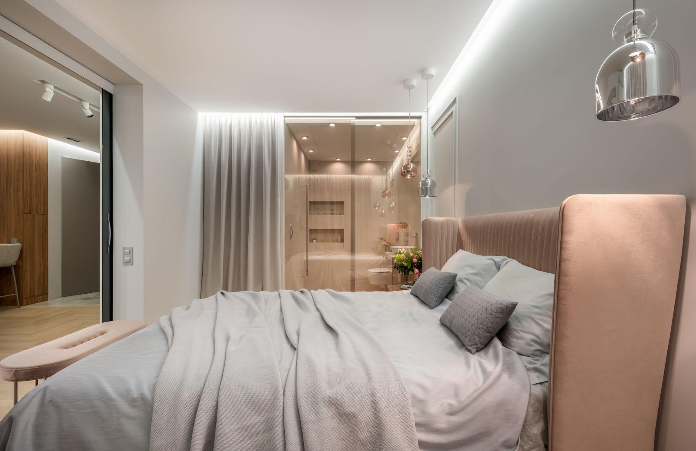

- Location
- Miami Beach, FL
- Area
- 1,950 sqft
- Year
- 2025
Sunset Harbour Residence is a primary suite renovation for a couple who wanted the one room in the house with no decisions left to make in it. A single warm, cream-toned palette carries the whole space, so nothing competes for attention at the end of the day.
The brief came down to one sentence from the client: "I don't want to think when I walk in." That ruled out contrast, pattern, and most furniture decisions before the design even started — every material in the room sits within a few degrees of the same warm cream, so the eye has nowhere urgent to land.
The upholstered headboard runs the full width of the wall behind it, hiding the room's only two doors inside its own paneling. A single woven pendant over each nightstand is the sole source of ornament in the room, chosen specifically for how little it looks like a "fixture" when it's off.
What reads as simplicity took more decisions than a more layered room would have — every material had to earn a place in a palette with nowhere to hide a wrong choice.







